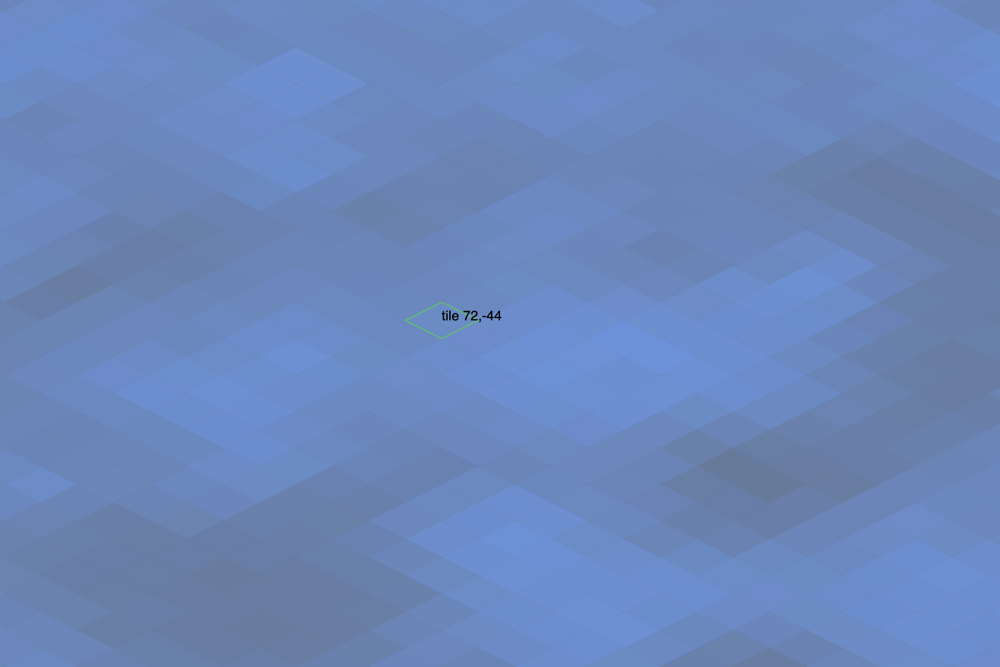

Spring 2025 - "Boaty McLongBoat" ⇒ "Island Archipelago"
Arrow keys and WASD scroll. Hold Space to stop boats and people. Hold shift to place boats with sails. Clicking changes tiles.
World seed:

Description
We're starting with a simple "Infinite Worlds" sketch derived from Experiment 04. Boaty McLongBoat is an infinite boat in which users can rearrange the deck chairs.
We'll be removing McLongBoat and creating an island archipelago. Features:
- Islands with colored geography
- Users can navigate this infinite world with arrow keys.
- Users can place boats in the water.
- The world seed affects the island placement
Stretch goals:
- Islands have varrying geography?
- Boats move around on the water?
- Adjacent boats make longer, wider, bigger boats?
- People can be placed on the islands?
- People move around on the islands?
- Splash animations when boats are placed or removed?
- What happens when you click on an island?
A little Organization
Could we benefit from some kind of organization with out getting all hierarchical?
- Do we need a few coordinators or project managers?
- Do we need to make a high level list of goals?
- How can we break up the code into smaller pieces so that we aren't killing each others edits? Breaking everything into Classes?
- Do we need a lower level punch list?
- Do we need a list of stretch goals?
- Code style guide so we are all on the same page?
- What other questions did we forget to ask?
Technical
It remains to be seen, but watch this space for technical details.
Reflection
This is a total experiment. Will it work? Will it bomb? Teaching like programming is sometimes an experiment.